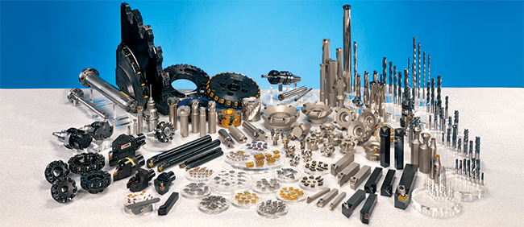
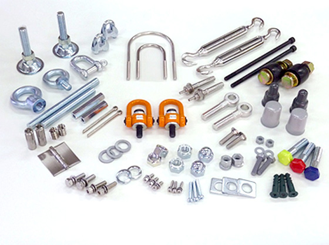

スミヤ機工株式会社 – 地域産業を支える信頼と実績の機械工具商
スミヤ機工株式会社は、創業より80余年にわたり、愛媛県新居浜市に本社を構え、総合機械工具商として地域のものづくりを支えてまいりました。
長い歴史の中で積み重ねてきた経験と信頼を礎に、私たちはお客様のニーズに応じた最適な製品やサービスを提供し、地域社会と産業の発展に貢献しています。
当社の主要な取引先には、世界有数の造船会社である今治造船をはじめ、地元新居浜を中心とした各種プラント企業があり、製造現場で必要とされる幅広い機械工具や消耗品の供給を通じて、現場の安全性・効率性向上を力強くサポートしています。
また、単なる商社機能にとどまらず、お客様の課題解決に寄り添うパートナーとして、技術的な相談や製品選定、アフターフォローにも力を入れています。
時代とともに変化する産業構造や技術革新に対応しながら、より高度な提案型営業を展開し、信頼される企業としての価値を高めていくことを目指しています。
これからもスミヤ機工株式会社は、誠実なものづくりの精神を大切にし、地域社会とともに歩む企業として、未来へ向けた挑戦を続けてまいります。
事業内容 / サービス
産業機械・工作機械の販売
汎用旋盤・フライス盤から最新のCNC工作機械まで、幅広い機械を取り扱っております。
新品・中古ともに対応可能です。
各種工具・消耗品の販売
切削工具、測定機器、電動・空圧工具、作業工具など、国内外の有名ブランドを多数取り扱い、現場の効率化を支えます。
カスタム対応・特注品の手配
お客様の用途に応じた特注工具の設計・製作や、難しい仕様にも柔軟に対応いたします。
